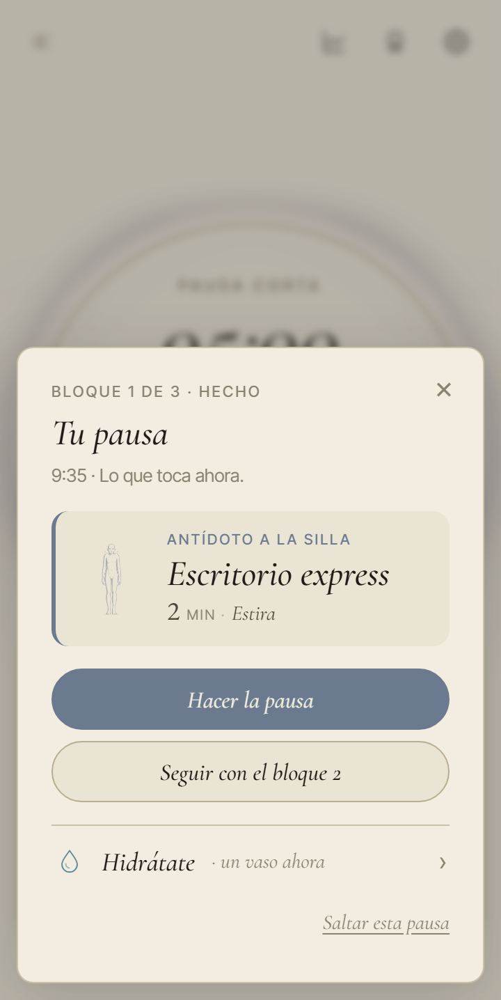
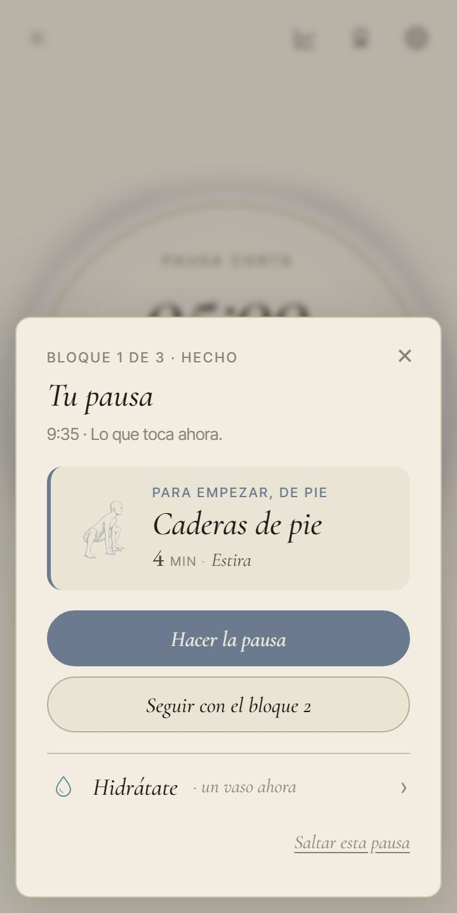
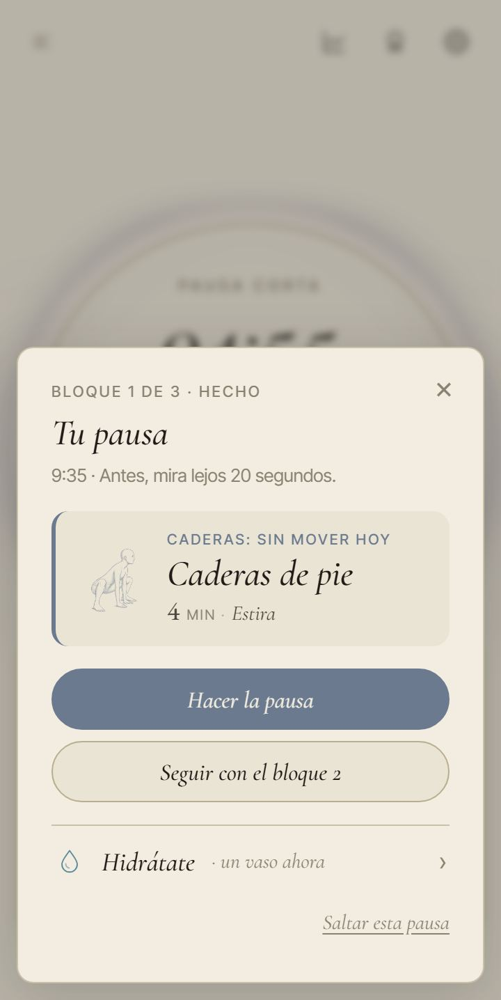
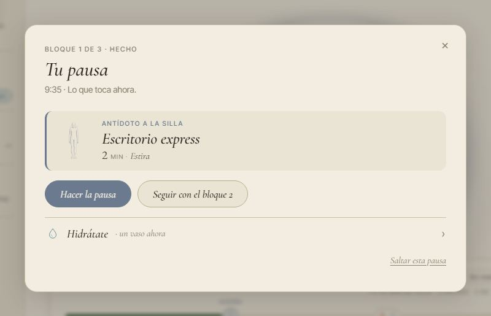
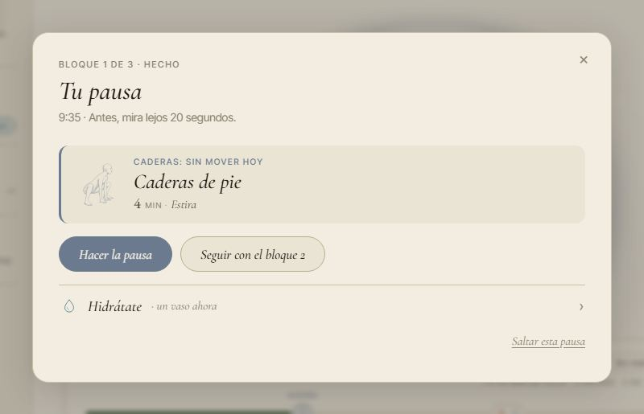

<title>Las pausas con lógica</title>
<link rel="preconnect" href="https://fonts.googleapis.com">
<link rel="preconnect" href="https://fonts.gstatic.com" crossorigin>
<link rel="stylesheet" href="https://fonts.googleapis.com/css2?family=Cormorant+Garamond:ital,wght@1,400;1,500&family=Inter+Tight:wght@400;500;600&display=swap">
<style>
/* Una columna de lectura, como una carta larga de PACE; las tablas y las fotos se abren cuando hay ancho. Colores y letras, los de la app (DESIGN_SYSTEM.md). */
:root {
  --paper: #F2EDE0; --paper-2: #EAE4D4;
  --ink: #1F1C17; --ink-2: #4A453C; --ink-3: #6F695B;
  --line: #D6CDB6;
  --focus: #3E5A3A; --breathe: #C97A5D; --move: #9A7B4F; --extra: #6B7A8F;
  --mark: rgba(62, 90, 58, 0.10);
  --serif: 'Cormorant Garamond', Georgia, 'Times New Roman', serif;
  --sans: 'Inter Tight', system-ui, -apple-system, 'Segoe UI', sans-serif;
  color-scheme: light;
}
@media (prefers-color-scheme: dark) {
  :root:not([data-theme="light"]) {
    --paper: #1d1a14; --paper-2: #26211a;
    --ink: #EDE5D3; --ink-2: #c0b49e; --ink-3: #B2A995; --line: #4d4536;
    --focus: #98B58B; --breathe: #E8A98F; --move: #C9A877; --extra: #9FB0C6;
    --mark: rgba(152, 181, 139, 0.14);
    color-scheme: dark;
  }
}
:root[data-theme="dark"] {
  --paper: #1d1a14; --paper-2: #26211a;
  --ink: #EDE5D3; --ink-2: #c0b49e; --ink-3: #B2A995; --line: #4d4536;
  --focus: #98B58B; --breathe: #E8A98F; --move: #C9A877; --extra: #9FB0C6;
  --mark: rgba(152, 181, 139, 0.14);
  color-scheme: dark;
}
* { box-sizing: border-box; }
body { background: var(--paper); color: var(--ink); font-family: var(--sans); font-size: 16px; line-height: 1.55; }
.hoja { max-width: 860px; margin: 0 auto; padding-inline: 20px; padding-block: 40px 72px; display: flex; flex-direction: column; gap: 44px; }
h1, h2, h3 { font-family: var(--serif); font-style: italic; font-weight: 500; text-wrap: balance; margin: 0; color: var(--ink); }
h1 { font-size: clamp(38px, 7vw, 54px); line-height: 1.02; }
h2 { font-size: 30px; line-height: 1.1; }
h3 { font-size: 22px; line-height: 1.15; }
p { margin: 0; max-width: 68ch; }
b { font-weight: 600; }
a { color: var(--focus); text-underline-offset: 2px; }
a:focus-visible { outline: 2px solid var(--focus); outline-offset: 2px; border-radius: 2px; }
.cap { font-size: 11px; letter-spacing: .14em; text-transform: uppercase; color: var(--ink-3); font-weight: 500; }
.sec { display: flex; flex-direction: column; gap: 16px; }
.sec + .sec { border-top: 1px solid var(--line); padding-top: 40px; }
.entrada { display: flex; flex-direction: column; gap: 14px; }
.entrada > p { font-size: 18px; color: var(--ink-2); }
.resumen { display: grid; grid-template-columns: repeat(2, minmax(0, 1fr)); gap: 1px; background: var(--line); border: 1px solid var(--line); border-radius: 12px; overflow: hidden; }
.resumen > div { background: var(--paper-2); padding: 14px 16px; display: flex; flex-direction: column; gap: 4px; min-width: 0; }
.resumen strong { font-family: var(--serif); font-style: italic; font-weight: 500; font-size: 22px; line-height: 1.15; }
.resumen span { font-size: 14px; color: var(--ink-2); }
ul.lista { margin: 0; padding-left: 20px; display: flex; flex-direction: column; gap: 8px; max-width: 68ch; }
.nota { font-size: 14px; color: var(--ink-3); }
.dice { font-family: var(--serif); font-style: italic; font-size: 19px; color: var(--ink); border-left: 2px solid var(--line); padding-left: 12px; }
.tabla { overflow-x: auto; border: 1px solid var(--line); border-radius: 10px; }
table { border-collapse: collapse; width: 100%; font-size: 14px; font-variant-numeric: tabular-nums; }
th, td { text-align: left; vertical-align: top; padding: 9px 12px; border-bottom: 1px solid var(--line); }
tr:last-child td { border-bottom: 0; }
th { font-size: 11px; letter-spacing: .1em; text-transform: uppercase; color: var(--ink-3); font-weight: 500; background: var(--paper-2); }
/* En el móvil las tablas no se aplastan: se desplazan dentro de su caja. */
.tabla table { min-width: 34rem; }
td.num, th.num { text-align: right; white-space: nowrap; }
td .sub { display: block; color: var(--ink-3); font-size: 13px; }
tr.fila-bien td { background: var(--mark); }
.mal { color: var(--breathe); font-weight: 600; }
.bien { color: var(--focus); font-weight: 600; }
/* La semana: un día por fila, una parada por celda, con el color del módulo. */
.semana { display: grid; grid-template-columns: 34px repeat(3, minmax(0, 1fr)); gap: 6px; font-size: 13.5px; }
.semana .dia { font-family: var(--serif); font-style: italic; font-size: 20px; color: var(--ink-3); align-self: center; }
.semana .cab { font-size: 11px; letter-spacing: .1em; text-transform: uppercase; color: var(--ink-3); padding: 0 8px; }
.plato { background: var(--paper-2); border-left: 3px solid var(--c, var(--line)); border-radius: 6px; padding: 6px 8px; line-height: 1.3; min-width: 0; }
.plato i { font-style: normal; color: var(--ink-3); font-size: 12px; display: block; }
.plato.pie::after { content: 'de pie'; display: inline-block; margin-top: 3px; font-size: 10.5px; letter-spacing: .1em; text-transform: uppercase; color: var(--focus); font-weight: 600; }
.es { --c: var(--extra); } .mu { --c: var(--move); } .re { --c: var(--breathe); }
.leyenda { display: flex; flex-wrap: wrap; gap: 6px 16px; font-size: 13px; color: var(--ink-3); }
.leyenda span::before { content: ''; display: inline-block; width: 10px; height: 10px; border-radius: 2px; margin-right: 6px; background: var(--c); vertical-align: -1px; }
.dos-col { display: grid; grid-template-columns: repeat(2, minmax(0, 1fr)); gap: 24px; }
.dos-col > div { display: flex; flex-direction: column; gap: 10px; min-width: 0; }
.fotos { display: grid; grid-template-columns: repeat(4, minmax(0, 1fr)); gap: 14px; align-items: start; }
.fotos.dos { grid-template-columns: repeat(2, minmax(0, 1fr)); }
figure { margin: 0; display: flex; flex-direction: column; gap: 8px; min-width: 0; }
figure img { width: 100%; height: auto; border: 1px solid var(--line); border-radius: 10px; display: block; background: var(--paper-2); }
figcaption { font-size: 13px; color: var(--ink-3); line-height: 1.4; }
figcaption b { color: var(--ink); }
.formas { display: flex; flex-direction: column; border-top: 1px solid var(--line); }
.forma { display: grid; grid-template-columns: 34px minmax(0, 1fr); gap: 4px 14px; padding: 18px 0; border-bottom: 1px solid var(--line); }
.forma .n { font-family: var(--serif); font-style: italic; font-size: 26px; line-height: 1; color: var(--ink-3); }
.forma > div { display: flex; flex-direction: column; gap: 6px; min-width: 0; }
.forma.reco .n { color: var(--focus); }
.chip { display: inline-block; font-size: 11px; letter-spacing: .1em; text-transform: uppercase; font-weight: 600; color: var(--focus); border: 1px solid var(--focus); border-radius: 99px; padding: 1px 8px; margin-left: 6px; vertical-align: 3px; }
.preguntas { display: flex; flex-direction: column; gap: 12px; counter-reset: q; }
.preguntas > div { background: var(--paper-2); border-radius: 10px; padding: 14px 16px; display: flex; flex-direction: column; gap: 6px; }
.fuentes { margin: 0; padding-left: 20px; display: flex; flex-direction: column; gap: 6px; font-size: 14px; color: var(--ink-2); max-width: 74ch; }
code { font-size: 13px; background: var(--paper-2); padding: 1px 5px; border-radius: 4px; }
@media (max-width: 700px) {
  .fotos { grid-template-columns: repeat(2, minmax(0, 1fr)); }
  .dos-col { grid-template-columns: minmax(0, 1fr); }
  .resumen { grid-template-columns: minmax(0, 1fr); }
  .semana { grid-template-columns: 26px repeat(3, minmax(0, 1fr)); font-size: 12.5px; gap: 4px; }
  .semana .cab { padding: 0 4px; }
}
@media (prefers-reduced-motion: reduce) { * { scroll-behavior: auto; } }
</style>

<main class="hoja">

<header class="entrada">
  <span class="cap">PACE · «A tu ritmo» y «PACE que aprende» · propuesta para Ez · 14 oct. 2026</span>
  <h1>Las pausas con lógica</h1>
  <p>En «Dos horas», junto a la mesa y sin material, casi todas las pausas eran «Escritorio express». Aquí está por qué pasa, qué recomiendan las guías de salud laboral para las pausas de quien trabaja sentado, cómo quedaría el día con esas reglas y el primer paso de «PACE que aprende». No he cambiado nada en la app: las fotos llevan el texto nuevo puesto encima de la app real. Las preguntas van al final.</p>
  <div class="resumen">
    <div><strong>La misma pausa los cinco días</strong><span>La semana del 12 de octubre, «Dos horas» abre cada día con «Escritorio express», salvo el lunes, que la pone segunda.</span></div>
    <div><strong>1 de cada 8 pausas te levanta</strong><span>En «Dos horas», 7 de 60 pausas en seis semanas. Esa semana, ninguna. Todo lo de Mueve que cabe junto a la mesa se hace sentado.</span></div>
    <div><strong>Las guías piden lo contrario</strong><span>Levantarse cada 20 o 30 minutos, moverse más que quedarse de pie, y diez minutos fuera de la silla tras dos horas.</span></div>
    <div><strong>Con la regla nueva, 6 de cada 10</strong><span>Pausas de pie (en la jornada entera, con tres rutinas nuevas y la mesa), nunca la misma primera pausa dos días seguidos y nunca dos pausas seguidas sentado.</span></div>
  </div>
</header>

<section class="sec">
  <span class="cap">1 · Lo que viste</span>
  <h2>Por qué sale siempre «Escritorio express»</h2>
  <p>«Junto a la mesa» y «Sin material» no son filtros que se elijan: son las dos condiciones fijas con las que «A tu ritmo» escoge las rutinas. Entra lo que no pide suelo, ni pared, ni silla sin ruedas, ni retener la respiración, ni lleva aviso de seguridad. De todo el catálogo quedan pocas:</p>
  <div class="tabla"><table>
    <thead><tr><th>Lista</th><th class="num">Hoy</th><th class="num">Desde v1, sin PACE completo</th><th>Rutinas</th></tr></thead>
    <tbody>
      <tr><td>Estira</td><td class="num">6</td><td class="num">6</td><td>Cuello · Escritorio express · Muñecas y manos · Hombros · círculos · Caderas de pie · Cadena posterior de pie</td></tr>
      <tr><td>Mueve</td><td class="num">5</td><td class="num">4</td><td>Gemelos subrepticios · Grip + antebrazos · Glúteos invisibles · Postura reset · Core silencioso <span class="sub">Core silencioso es de PACE completo. Las cinco se hacen sentado.</span></td></tr>
      <tr><td>Respira, pausa larga</td><td class="num">5</td><td class="num">4</td><td>Diafragmática · Coherente 5·5 · Coherente 6·6 · Exhalación 4·6 · Coherente 432 <span class="sub">Coherente 432 es de PACE completo.</span></td></tr>
      <tr><td>Respira, cierre</td><td class="num">1</td><td class="num">1</td><td>Suspiro fisiológico</td></tr>
    </tbody>
  </table></div>
  <p class="nota">Se quedan fuera, entre otras: Columna en la silla, Sentadillas de silla y Fondos en silla (piden una silla sin ruedas), Flexiones de escritorio (pide una mesa estable), Hombros (pared) y todo lo de suelo. Lo que dices que no te ayudó también sale, salvo que vaciara la lista. <code>CONTENT.md</code> todavía cuenta Rítmica yin en Respira: ya no entra, porque retiene.</p>

  <h3>Tres cosas juntas</h3>
  <ul class="lista">
    <li><b>La semana manda sobre el día.</b> Cada día la lista empieza por otra rutina, pero después el tema de la semana la reordena. Esta semana el tema es «Semana ligera», que pone delante las más cortas: «Escritorio express» dura 2 minutos y gana todos los días.</li>
    <li><b>Siempre se coge la primera libre.</b> «Dos horas» sirve dos pausas y un cierre, así que solo se ve el principio de la lista. Lo que queda detrás no llega a salir.</li>
    <li><b>Las listas son cortas.</b> Con 6 de Estira, 4 de Mueve y 1 de cierre, el cierre es el mismo cuatro días de cinco, y la jornada entera gasta Estira casi entera cada día.</li>
  </ul>

  <h3>Cuánto tarda en repetirse</h3>
  <p>Medido con la regla y el catálogo de verdad, de lunes a viernes durante seis semanas (del 12 de octubre al 20 de noviembre: un ciclo entero de temas), con el horario de fábrica y lo de pago cerrado:</p>
  <div class="tabla"><table>
    <thead><tr><th>Hoy</th><th class="num">Rutinas al día</th><th class="num">Distintas por semana</th><th class="num">Misma 1.ª pausa que ayer</th><th class="num">Pausas que te levantan</th><th class="num">Seguidas sentado, como mucho</th></tr></thead>
    <tbody>
      <tr><td>Dos horas</td><td class="num">3</td><td class="num">5 a 7</td><td class="num mal">17 de 29 días</td><td class="num mal">12&nbsp;%</td><td class="num">2</td></tr>
      <tr><td>Jornada entera</td><td class="num">9 o 10</td><td class="num">13 a 15</td><td class="num mal">17 de 29 días</td><td class="num mal">16&nbsp;%</td><td class="num mal">7</td></tr>
    </tbody>
  </table></div>
  <p class="nota">En la jornada entera, los miércoles con tres pausas largas repiten una rutina en el mismo día (6 veces en seis semanas). Esas tres largas son una deuda conocida que lleva la sesión de «A tu ritmo».</p>
</section>

<section class="sec">
  <span class="cap">2 · Lo que dicen las guías</span>
  <h2>Qué recomiendan para quien trabaja sentado</h2>
  <p>Ninguna guía da una receta de pausa exacta, y ninguna valida una rutina concreta de PACE. Sí coinciden en la forma: pausas cortas y frecuentes, levantarse de verdad, mover el cuerpo entero a lo largo del día y descansar la vista. Esto es lo que sale de cada una:</p>
  <div class="tabla"><table>
    <thead><tr><th>Qué</th><th>Qué dicen</th><th>Quién</th></tr></thead>
    <tbody>
      <tr><td>Cada cuánto</td><td>Levantarse al menos cada 20 o 30 minutos. Tras dos horas sentado, al menos 10 minutos fuera de la silla. Pausas cortas y frecuentes mejor que largas y pocas, y antes de que llegue el cansancio. En tareas que piden mucha atención, 10 minutos por hora; nunca más de dos horas seguidas.</td><td><a href="https://osha.europa.eu/en/publications/prolonged-static-sitting-work-health-effects-and-good-practice-advice">EU-OSHA 2021</a> · <a href="https://www.insst.es/materias/riesgos/riesgos-ergonomicos/trabajo-con-ordenadores/faq">INSST</a></td></tr>
      <tr><td>Qué hacer</td><td>Moverse, no solo ponerse de pie: lo contrario de estar sentado es moverse. Cualquier actividad cuenta, también la suave, y cualquier duración.</td><td><a href="https://osha.europa.eu/en/publications/prolonged-static-sitting-work-health-effects-and-good-practice-advice">EU-OSHA 2021</a> · <a href="https://pmc.ncbi.nlm.nih.gov/articles/PMC7719906/">OMS 2020</a> · <a href="https://www.nhs.uk/live-well/exercise/why-sitting-too-much-is-bad-for-us/">NHS</a> · <a href="https://csepguidelines.ca/">Canadá 2020</a></td></tr>
      <tr><td>Caminar un poco</td><td>Dos minutos de paseo suave cada 20 minutos, o cinco cada 30, bajaron el azúcar después de comer frente a quedarse sentado. Caminar funcionó mejor que solo ponerse de pie. Una vez por hora no bastó.</td><td><a href="https://doi.org/10.2337/dc11-1931">Dunstan 2012</a> · <a href="https://www.medicalnewstoday.com/amp/articles/5-minute-walks-every-30-minutes-offsets-effects-too-much-sitting">Diaz 2023</a> · <a href="https://pubmed.ncbi.nlm.nih.gov/35147898/">Buffey 2022</a></td></tr>
      <tr><td>La vista</td><td>En la pausa, relajar la vista mirando lejos. La regla 20-20-20: cada 20 minutos, mirar algo a unos 6 metros durante 20 segundos.</td><td><a href="https://www.insst.es/materias/riesgos/riesgos-ergonomicos/trabajo-con-ordenadores/faq">INSST</a> · <a href="https://healthy-workplaces.osha.europa.eu/sites/hwc/files/hwc/publication/TE0921307ENC%20_HWC20_22_Teleworking_WEB.pdf">EU-OSHA, teletrabajo</a></td></tr>
      <tr><td>Por la mañana</td><td>Empezar el día con un paseo corto o un ejercicio rápido.</td><td><a href="https://healthy-workplaces.osha.europa.eu/sites/hwc/files/hwc/publication/TE0921307ENC%20_HWC20_22_Teleworking_WEB.pdf">EU-OSHA, teletrabajo</a></td></tr>
      <tr><td>Después de comer</td><td>La hora de comer es buen momento para caminar. A primera hora de la tarde baja la atención por el reloj del cuerpo, aunque no se coma, y una comida rica en hidratos lo acentúa.</td><td><a href="https://healthy-workplaces.osha.europa.eu/sites/hwc/files/hwc/publication/TE0921307ENC%20_HWC20_22_Teleworking_WEB.pdf">EU-OSHA, teletrabajo</a> · <a href="https://pubmed.ncbi.nlm.nih.gov/15892914/">Monk 2005</a></td></tr>
      <tr><td>Al final</td><td>Respirar despacio (menos de 10 respiraciones por minuto) se asocia con un cuerpo más tranquilo. Cinco minutos al día con la exhalación larga mejoraron el ánimo más que la meditación en un ensayo de un mes.</td><td><a href="https://pubmed.ncbi.nlm.nih.gov/30245619/">Zaccaro 2018</a> · <a href="https://pmc.ncbi.nlm.nih.gov/articles/PMC9873947/">Balban 2023</a></td></tr>
      <tr><td>Cuello, hombros y espalda</td><td>Dos minutos al día de fuerza con una banda bajaron el dolor de cuello y hombros en oficina. Las pausas activas y los cambios de postura redujeron los casos nuevos de dolor de cuello y lumbar en seis meses.</td><td><a href="https://research.regionh.dk/da/publications/effectiveness-of-small-daily-amounts-of-progressive-resistance-tr/">Andersen 2011</a> · <a href="https://www.sjweh.fi/article/3949">Waongenngarm 2021</a></td></tr>
      <tr><td>Estirar</td><td>Cada zona grande, a ser posible a diario, con posturas de 10 a 30 segundos y alrededor de un minuto por zona. Tensión cómoda, nunca dolor.</td><td><a href="https://pubmed.ncbi.nlm.nih.gov/21694556/">ACSM 2011</a> · base de Mueve y Estira</td></tr>
      <tr><td>Lo que aportan</td><td>Las micropausas de hasta 10 minutos suben la energía y bajan el cansancio, poco pero de forma clara. Una pausa de 5 minutos más por hora bajó las molestias y la vista cansada sin perder trabajo. A quienes se pidió estirar en las pausas, lo hicieron en una de cada tres o cuatro.</td><td><a href="https://doi.org/10.1371/journal.pone.0272460">Albulescu 2022</a> · <a href="https://stacks.cdc.gov/view/cdc/198356">Galinsky 2000</a> · <a href="https://stacks.cdc.gov/view/cdc/186286">2007</a></td></tr>
    </tbody>
  </table></div>

  <h3>Las reglas para PACE</h3>
  <ul class="lista">
    <li><b>Alternar zonas.</b> Cinco zonas: cuello y hombros, espalda, caderas, piernas y manos. Nunca la misma en dos pausas seguidas, y primero la que hoy no se ha movido.</li>
    <li><b>Levantarse.</b> La primera pausa del día, la primera después de comer y la pausa larga, de pie. Y nunca dos pausas seguidas sentado si hay algo de pie que servir.</li>
    <li><b>Por la mañana, activar:</b> Mueve de pie. <b>Después de comer, caminar o mover las piernas</b>, nunca respirar sentado. <b>Al final, respirar despacio</b>, sin retenciones.</li>
    <li><b>Cuánto dura cada cosa.</b> Mueve, de 1 a 3 minutos. Estira, de 2 a 4. Respira en la pausa larga, de 5 a 10. El cierre, de 2 a 5. La pausa corta sigue en 5 minutos y la larga en 15, cada dos horas más o menos: entra en lo que piden el INSST y EU-OSHA.</li>
    <li><b>Qué no repetir.</b> Nada dos veces el mismo día (como ya hace). Nada que saliera ayer en la misma parada. La misma zona, nunca en dos paradas seguidas.</li>
    <li><b>Sin promesas de salud.</b> La frase de cada pausa dice lo que pasa hoy («Caderas: sin mover hoy»), nunca lo que la rutina cura o previene.</li>
  </ul>
</section>

<section class="sec">
  <span class="cap">3 · La secuencia del día</span>
  <h2>Qué sirve cada pausa</h2>
  <p>El día se sigue componiendo por la mañana, como hoy, y se recompone cuando la realidad cambia: al terminar o empezar un bloque, si saltas una pausa o si haces algo fuera del plan. Primero se decide qué módulo toca en cada parada; después, qué rutina, con la puntuación de la sección 5.</p>
  <div class="tabla"><table>
    <thead><tr><th>Parada</th><th>Qué sirve</th><th>Por qué</th><th>Si no hay</th></tr></thead>
    <tbody>
      <tr><td>La primera del día</td><td>Mueve, de pie</td><td>Empezar con un paseo o un ejercicio rápido (EU-OSHA)</td><td>Estira de pie</td></tr>
      <tr><td>Las cortas</td><td>La cadencia de hoy (la de antes de la larga, Mueve; las demás, Estira), con la zona que más lleva sin moverse</td><td>Cada zona a diario (ACSM); pausas cortas y frecuentes (INSST)</td><td>La zona servida hace más rato</td></tr>
      <tr><td>La larga, cada dos horas</td><td>Respira y Estira, y la de Estira, de pie</td><td>Diez minutos fuera de la silla tras dos horas (EU-OSHA)</td><td>Una Estira que no repita zona</td></tr>
      <tr><td>La primera después de comer</td><td>Mueve, de pie</td><td>Caminar después de comer (Dunstan, Buffey); el bajón de primera hora de la tarde (Monk)</td><td>Estira de pie</td></tr>
      <tr><td>Antes de comer, los jueves</td><td>Respira, como ya hace el acento del jueves</td><td>Se queda como está</td><td>Estira</td></tr>
      <tr><td>Después de saltar una pausa, o de una sentada</td><td>Esta, de pie</td><td>Levantarse cada 20 o 30 minutos (EU-OSHA)</td><td>La que no repita zona</td></tr>
      <tr><td>Después de algo fuera del plan</td><td>Lo hecho cuenta: su zona ya está movida y no se repite</td><td>El día dice la verdad, como al recolocar</td><td>—</td></tr>
      <tr><td>El cierre</td><td>Respira despacio, sin retenciones y de 5 minutos como mucho: rota entre Suspiro fisiológico, Diafragmática y Coherente 5·5</td><td>Respiración lenta al final (Zaccaro, Balban)</td><td>Suspiro fisiológico</td></tr>
    </tbody>
  </table></div>
  <p class="nota">Los acentos del lunes (arrancar con Mueve) y del viernes (un cierre más largo) pasan a ser de todos los días. El tema de la semana se queda para desempatar: decide qué zona va delante cuando dos rutinas puntúan igual.</p>

  <h3>Cuando no hay bastantes rutinas</h3>
  <div class="tabla"><table>
    <thead><tr><th>Qué falta</th><th>Qué hace</th></tr></thead>
    <tbody>
      <tr><td>Ya salió hoy todo lo del módulo</td><td>La de ese módulo que salió hace más rato, de una zona distinta a la de la parada anterior</td></tr>
      <tr><td>Toca levantarse y no queda nada de pie</td><td>La que no repita zona. La frase no dice «de pie».</td></tr>
      <tr><td>Lo que dijiste que no te ayudó vaciaría la lista</td><td>Se ignora ese «No», como ya hace la pausa</td></tr>
      <tr><td>Un módulo se queda vacío</td><td>La parada sirve el otro (Estira o Mueve)</td></tr>
      <tr><td>Solo hay una rutina de cierre</td><td>El cierre rota con los Respira lentos de hasta 5 minutos</td></tr>
    </tbody>
  </table></div>

  <h3>La semana del 12 de octubre en «Dos horas»</h3>
  <div class="leyenda"><span class="es">Estira</span><span class="mu">Mueve</span><span class="re">Respira</span></div>
  <div class="dos-col">
    <div>
      <span class="cap">Hoy</span>
      <div class="semana">
        <span></span><span class="cab">9:35</span><span class="cab">10:15</span><span class="cab">Cierre</span>
        <span class="dia">L</span><div class="plato mu">Gemelos subrepticios</div><div class="plato es">Escritorio express</div><div class="plato re">Suspiro fisiológico</div>
        <span class="dia">M</span><div class="plato es">Escritorio express</div><div class="plato mu">Gemelos subrepticios</div><div class="plato re">Suspiro fisiológico</div>
        <span class="dia">X</span><div class="plato es">Escritorio express</div><div class="plato re">Exhalación 4·6 y Cuello<i>larga, 10:10</i></div><div class="plato re">Suspiro fisiológico</div>
        <span class="dia">J</span><div class="plato es">Escritorio express</div><div class="plato mu">Gemelos subrepticios</div><div class="plato re">Suspiro fisiológico</div>
        <span class="dia">V</span><div class="plato es">Escritorio express</div><div class="plato mu">Gemelos subrepticios</div><div class="plato re">Diafragmática</div>
      </div>
    </div>
    <div>
      <span class="cap">Con la regla nueva y el catálogo de hoy</span>
      <div class="semana">
        <span></span><span class="cab">9:35</span><span class="cab">10:15</span><span class="cab">Cierre</span>
        <span class="dia">L</span><div class="plato es pie">Caderas de pie</div><div class="plato mu">Postura reset</div><div class="plato re">Suspiro fisiológico</div>
        <span class="dia">M</span><div class="plato es pie">Cadena posterior de pie</div><div class="plato mu">Grip + antebrazos</div><div class="plato re">Diafragmática</div>
        <span class="dia">X</span><div class="plato es pie">Caderas de pie</div><div class="plato re pie">Coherente 5·5 y Cadena posterior<i>larga, 10:10</i></div><div class="plato re">Suspiro fisiológico</div>
        <span class="dia">J</span><div class="plato es pie">Cadena posterior de pie</div><div class="plato mu">Glúteos invisibles</div><div class="plato re">Diafragmática</div>
        <span class="dia">V</span><div class="plato es pie">Caderas de pie</div><div class="plato mu">Gemelos subrepticios</div><div class="plato re">Suspiro fisiológico</div>
      </div>
    </div>
  </div>
  <p>Con el catálogo de hoy la primera pausa solo puede alternar entre dos rutinas de pie, porque no hay ningún Mueve de pie. Con las tres rutinas nuevas de la sección 4, la primera pausa de esa semana sería Flexiones de escritorio, Paseo corto, Piernas de pie, Flexiones de escritorio y Paseo corto.</p>

  <div class="tabla"><table>
    <thead><tr><th>Seis semanas</th><th class="num">Pausas de pie</th><th class="num">Seguidas sentado, como mucho</th><th class="num">Misma 1.ª pausa que ayer</th><th class="num">Distintas por semana</th></tr></thead>
    <tbody>
      <tr><td>Dos horas · hoy</td><td class="num">12&nbsp;%</td><td class="num">2</td><td class="num">17 de 29</td><td class="num">5 a 7</td></tr>
      <tr><td>Dos horas · regla nueva</td><td class="num">60&nbsp;%</td><td class="num">1</td><td class="num">0</td><td class="num">9 a 10</td></tr>
      <tr class="fila-bien"><td>Dos horas · regla nueva y lo nuevo del catálogo</td><td class="num">60&nbsp;%</td><td class="num">1</td><td class="num">0</td><td class="num">10 a 12</td></tr>
      <tr><td>Jornada · hoy</td><td class="num">16&nbsp;%</td><td class="num">7</td><td class="num">17 de 29</td><td class="num">13 a 15</td></tr>
      <tr><td>Jornada · regla nueva</td><td class="num">29&nbsp;%</td><td class="num">5</td><td class="num">0</td><td class="num">15</td></tr>
      <tr><td>Jornada · regla nueva y la mesa</td><td class="num">43&nbsp;%</td><td class="num">3</td><td class="num">0</td><td class="num">16</td></tr>
      <tr class="fila-bien"><td>Jornada · regla nueva y lo nuevo del catálogo</td><td class="num">60&nbsp;%</td><td class="num">1</td><td class="num">0</td><td class="num">19</td></tr>
    </tbody>
  </table></div>
  <p class="nota">En la jornada, la regla nueva sola no llega: con el catálogo de hoy, a las 15:45 (la primera después de comer) ya no queda nada de pie y sale Postura reset, sentada. Por eso hace falta contenido.</p>
</section>

<section class="sec">
  <span class="cap">4 · Lo que falta en el catálogo</span>
  <h2>Tres rutinas de pie y la mesa</h2>
  <p>Para <code>CONTENT.md</code>. Las dos primeras de la tabla se hacen con ejercicios que ya tienen dibujo; el paseo necesita uno nuevo. Las tres son gratis y caben junto a la mesa.</p>
  <div class="tabla"><table>
    <thead><tr><th>Nombre</th><th>Módulo</th><th>Zona</th><th class="num">Min</th><th>Material</th><th>Pasos</th></tr></thead>
    <tbody>
      <tr><td><b>Piernas de pie</b></td><td>Mueve</td><td>Piernas</td><td class="num">2</td><td>Mesa opcional, para apoyarse</td><td>Elevación de talones · Elevación de puntas · Sentadilla de cuádriceps · Respiraciones profundas <span class="sub">Los cuatro dibujos existen.</span></td></tr>
      <tr><td><b>Espalda de pie</b></td><td>Estira</td><td>Espalda</td><td class="num">3</td><td>Ninguno</td><td>Rodar hacia abajo · Rotación torácica · Apertura de pecho · Juntar omóplatos <span class="sub">Existen; hay que mirar que el de la rotación sirva de pie.</span></td></tr>
      <tr><td><b>Paseo corto</b></td><td>Mueve</td><td>Piernas</td><td class="num">2</td><td>Ninguno</td><td>Caminar 90 segundos (pasillo, cocina, escalera) · Elevación de talones · Respiraciones profundas <span class="sub">Necesita un dibujo nuevo: caminar.</span></td></tr>
    </tbody>
  </table></div>
  <ul class="lista">
    <li><b>La mesa cuenta.</b> «Junto a la mesa» quiere decir que hay una mesa, así que Flexiones de escritorio, que pide «una mesa estable», puede entrar. Solo eso ya sube la jornada del 29&nbsp;% al 43&nbsp;% de pausas de pie.</li>
    <li><b>La silla no.</b> Columna en la silla, Sentadillas de silla y Fondos en silla piden una silla sin ruedas, y la de la oficina suele tenerlas. Siguen fuera.</li>
    <li><b>Mirar lejos no es una rutina.</b> Son 20 segundos: pueden ir en la frase de debajo de «Tu pausa» (la foto C de la sección 6), sin dibujo ni pasos.</li>
  </ul>
  <p class="nota">Con el paseo, «Junto a la mesa» deja de ser del todo cierto: te alejas un minuto y vuelves. Lo dejaría así; si prefieres, la etiqueta puede quedarse en «Sin material».</p>
</section>

<section class="sec">
  <span class="cap">5 · PACE que aprende</span>
  <h2>La capa 1 es esta misma regla</h2>
  <p>La capa 1 elige lo mejor para cada momento sin historial: con lo que ha pasado hoy, la hora y lo que dijiste que no te ayudó. Es la regla de la sección 3 escrita con puntos, y por eso sirve desde el primer día. La capa 2 (la carta del lunes, de PACE completo) llegará después a ajustar esos puntos con semanas de datos.</p>

  <h3>Lo que ya se guarda</h3>
  <p>Todo vive en el móvil o en el navegador de cada persona. No hay servidor.</p>
  <div class="tabla"><table>
    <thead><tr><th>Dato</th><th>Dónde</th><th>Desde</th><th>Para la capa 1</th><th>Para la capa 2</th></tr></thead>
    <tbody>
      <tr><td>Cada sesión terminada: módulo, rutina, si acabó o se cortó antes, segundos</td><td>Registro (<code>session.completed</code>)</td><td>4 ago.</td><td>Lo hecho hoy fuera del plan: su zona ya está movida</td><td>A qué horas paras de verdad</td></tr>
      <tr><td>Por dónde empezó (la pausa, la barra, una biblioteca, la parada del día) y si era lo que servía el día</td><td>El mismo, <code>origin</code> y <code>fromMenu</code></td><td>18 sep.</td><td>—</td><td>Si se hace lo que el día sirve</td></tr>
      <tr><td>«¿Te ayudó?»: sí, un poco o no, una vez por rutina y día</td><td>Registro (<code>feedback.answered</code>) y contadores en el estado</td><td>4 ago.</td><td>El «No» sin ningún «Sí» saca la rutina (ya lo hace)</td><td>Pesa más que todo lo demás</td></tr>
      <tr><td>El resumen del día de «A tu ritmo»: cada parada, su hora, lo servido, hecha o saltada, cuántos «Otra» y qué se descartó, minutos de reunión cerca</td><td>Registro (<code>ritmo.day.closed</code>)</td><td>8 oct.</td><td>Lo servido ayer, para no repetirlo en la misma parada</td><td>Lo saltado, lo cambiado</td></tr>
      <tr><td>El día de hoy: lo hecho, lo saltado, los «Otra», la pausa abierta</td><td>Estado (<code>ritmo.dia</code>), solo hoy</td><td>17 sep.</td><td>Las zonas movidas hoy y si la anterior fue sentada o se saltó</td><td>Va al resumen del día</td></tr>
      <tr><td>Horario, semana tipo y reuniones de hoy (solo las horas)</td><td>Estado</td><td>17 sep. y después</td><td>El momento: primera, después de comer, cierre</td><td>Si una reunión explica una pausa saltada</td></tr>
      <tr><td>Minutos de foco, Respira, Mueve y vasos por día</td><td>Estado (<code>history.days</code>)</td><td>siempre</td><td>—</td><td>Contexto de la carta</td></tr>
    </tbody>
  </table></div>
  <h3>Lo que falta para la capa 1</h3>
  <ul class="lista">
    <li><b>La zona y si te levanta, por rutina.</b> Dos datos nuevos en cada rutina de las listas (unas quince).</li>
    <li><b>Lo servido ayer, a mano.</b> El resumen del día vive en el registro, que se lee tarde; el día se compone al momento. Hace falta una lista corta en el estado: lo servido los últimos siete días, unas cincuenta claves.</li>
    <li><b>Lo hecho hoy, también fuera del plan.</b> Lo mismo: la lista de rutinas terminadas hoy en el estado, que se vacía al cambiar de día.</li>
    <li><b>Lo que no se guarda.</b> Las sesiones empezadas y no terminadas, y el «Saltar» de la pausa por libre. A la capa 1 no le hacen falta.</li>
  </ul>
  <h3>Cuántos datos tienen los testers</h3>
  <p>No se puede saber: nada sale del dispositivo. Lo que sí se sabe es el techo. El resumen del día existe desde el 8 de octubre, así que nadie tiene todavía una semana entera; «¿te ayudó?» y las sesiones, desde el 4 de agosto. Para saberlo de verdad habría que pedir a cada tester que mande su copia de «Tus datos», o construir los datos anónimos con permiso que decidiste en septiembre. La capa 1 no lo necesita.</p>

  <h3>La puntuación</h3>
  <p>Para cada parada, primero se descarta y luego se suma. Gana la de más puntos.</p>
  <div class="tabla"><table>
    <thead><tr><th>Qué mira</th><th>Cuánto pesa</th><th>De dónde lo saca</th></tr></thead>
    <tbody>
      <tr><td>Ya hecha hoy, en el plan o fuera</td><td>Fuera, si hay otra</td><td>El día de hoy</td></tr>
      <tr><td>Salió ayer en esta misma parada</td><td>Fuera, si hay otra</td><td>Lo servido ayer</td></tr>
      <tr><td>Dijiste que no te ayudó (y nunca que sí)</td><td>Fuera, si hay otra</td><td>«¿Te ayudó?»</td></tr>
      <tr><td>Toca levantarse y no es de pie</td><td>Fuera, si hay algo de pie</td><td>El momento y la parada anterior</td></tr>
      <tr><td>Mueve una zona que hoy no se ha movido</td><td class="bien">+3</td><td>El día de hoy</td></tr>
      <tr><td>Repite la zona de la parada anterior</td><td class="mal">−3</td><td>La parada anterior</td></tr>
      <tr><td>Salió ayer en otra parada</td><td class="mal">−1</td><td>Lo servido ayer</td></tr>
      <tr><td>Empate</td><td>La que hace más días que no sale; después, la zona del tema de la semana</td><td>Lo servido · la fecha</td></tr>
    </tbody>
  </table></div>
  <p class="nota">«Toca levantarse» quiere decir: la primera del día, la primera después de comer, la de Estira de la larga, o que la anterior fue sentada o se saltó. La frase de la pausa sale de la razón que más pesó.</p>

  <h3>Un ejemplo: el miércoles 14, a las 9:35</h3>
  <p>«Dos horas», primera pausa. Toca Mueve de pie, pero en la lista de hoy no hay ninguno, así que pasa a Estira de pie.</p>
  <div class="tabla"><table>
    <thead><tr><th>Rutina</th><th>Zona</th><th>Cuenta</th><th class="num">Puntos</th></tr></thead>
    <tbody>
      <tr class="fila-bien"><td><b>Caderas de pie</b></td><td>Caderas</td><td>De pie · zona sin mover hoy</td><td class="num">+3, elegida</td></tr>
      <tr><td>Cadena posterior de pie</td><td>Piernas</td><td>Salió ayer, el martes, en esta misma parada</td><td class="num">fuera</td></tr>
      <tr><td>Escritorio express · Cuello · Muñecas y manos · Hombros · círculos</td><td>Varias</td><td>Sentadas, y toca levantarse</td><td class="num">fuera</td></tr>
    </tbody>
  </table></div>
</section>

<section class="sec">
  <span class="cap">6 · Cómo lo dice la pausa</span>
  <h2>La frase de encima del nombre</h2>
  <p>Hoy esa línea dice lo mismo para todas las pausas de un módulo: «Antídoto a la silla» en Estira, «Cuerpo activo» en Mueve. Con la capa 1 dice por qué te toca esa rutina. Son fotos de la app real (v0.166.0) en la pausa de las 9:35 del miércoles; Caderas de pie la pinta la app pidiendo «Otra», y solo el texto va puesto encima.</p>
  <div class="fotos">
    <figure><figcaption><b>Hoy.</b> «Antídoto a la silla», Escritorio express.</figcaption></figure>
    <figure><figcaption><b>A · El momento.</b> «Para empezar, de pie».</figcaption></figure>
    <figure><figcaption><b>B · Lo de hoy.</b> «Caderas: sin mover hoy».</figcaption></figure>
    <figure><figcaption><b>C · Lo de hoy y mirar lejos.</b> El subtítulo pide 20 segundos mirando lejos.</figcaption></figure>
  </div>
  <div class="fotos dos">
    <figure><figcaption><b>Hoy</b>, a 1280 × 800.</figcaption></figure>
    <figure><figcaption><b>C</b>, a 1280 × 800. A y B cambian solo la línea de encima del nombre.</figcaption></figure>
  </div>
  <div class="tabla"><table>
    <thead><tr><th>La razón que más pesa</th><th>A · El momento</th><th>B · Lo de hoy</th></tr></thead>
    <tbody>
      <tr><td>La primera del día</td><td>Para empezar, de pie</td><td>La zona («Caderas: sin mover hoy»)</td></tr>
      <tr><td>La primera después de comer</td><td colspan="2">Después de comer, de pie</td></tr>
      <tr><td>La larga</td><td colspan="2">Dos horas: sal de la silla</td></tr>
      <tr><td>Saltaste la anterior o fue sentada</td><td>Toca levantarse</td><td>Llevas 70 min sentado (los minutos de verdad)</td></tr>
      <tr><td>Una zona sin mover</td><td>Toca otra zona</td><td>Espalda: sin mover hoy · Muñecas: sin mover hoy…</td></tr>
      <tr><td>El cierre</td><td colspan="2">Para cerrar, despacio</td></tr>
      <tr><td>Nada especial</td><td colspan="2">La de hoy: «Antídoto a la silla», «Cuerpo activo»</td></tr>
    </tbody>
  </table></div>
  <p class="nota">Medido en la app a 360 px: todas las frases en castellano caben en una línea. En inglés se parten dos («Two hours: leave the chair» y «Shoulders: not moved today»): habría que acortarlas. Con dos líneas la ventana crece 28 px.</p>
</section>

<section class="sec">
  <span class="cap">7 · Tres formas de hacerlo</span>
  <h2>De lo mínimo a lo completo</h2>
  <div class="formas">
    <div class="forma"><span class="n">1</span><div>
      <h3>Solo la rotación</h3>
      <p>Lo de ayer en la misma parada no vuelve, el tema de la semana solo desempata y el cierre rota entre los Respira lentos. No cambia nada de lo que se ve: arregla lo que viste, pero las pausas siguen siendo sentadas (12&nbsp;% de pie en «Dos horas»).</p>
    </div></div>
    <div class="forma reco"><span class="n">2</span><div>
      <h3>Series con lógica <span class="chip">Recomendada</span></h3>
      <p>La 1, más la secuencia del día de la sección 3 con su puntuación (la capa 1), la frase de la pausa que elijas en la sección 6, la mesa en la lista y las rutinas nuevas que quieras. Las pausas de pie pasan del 12&nbsp;% al 60&nbsp;% y nunca hay dos seguidas sentado. Cambia lo que sale en cada parada y la frase de encima del nombre; la forma de la pausa y de la línea no cambia.</p>
      <p>La recomiendo porque arregla las dos cosas a la vez, lo repetido y lo sentado, con reglas que se pueden leer y probar, y porque es la base que la capa 2 necesita para tener algo que ajustar.</p>
    </div></div>
    <div class="forma"><span class="n">3</span><div>
      <h3>Series con lógica y aprender ya</h3>
      <p>La 2, más empezar ya la capa 2: «¿te ayudó?», los «Otra» y lo saltado moviendo los puntos, y una de cada cinco pausas con algo que no sueles hacer. Ahora no la haría: el resumen del día existe desde el 8 de octubre, nadie tiene una semana entera y el plan aceptado es la carta del lunes cuando haya semanas de datos.</p>
    </div></div>
  </div>
  <p class="nota">La regla del día vive en <code>app/ritmo/ritmo.regla.js</code>, que ahora está tocando la sesión de las deudas de «A tu ritmo». Con tu sí, la implementación espera a que esa sesión suba a <code>main</code>.</p>
</section>

<section class="sec">
  <span class="cap">8 · Lo que te pregunto</span>
  <h2>Cuatro decisiones</h2>
  <div class="preguntas">
    <div><b>¿Con qué forma sigo?</b><span>Recomiendo la 2, series con lógica.</span></div>
    <div><b>¿Cómo dice la pausa por qué te toca eso?</b><span>Recomiendo la B, lo de hoy: dice algo que puedes comprobar («Caderas: sin mover hoy») sin prometer nada de salud.</span></div>
    <div><b>¿Qué entra en el catálogo?</b><span>Recomiendo las tres rutinas y la mesa. Piernas de pie y Espalda de pie no necesitan dibujos nuevos; Paseo corto necesita uno.</span></div>
    <div><b>¿La capa 1 es gratis o de PACE completo?</b><span>Recomiendo gratis: es lo que hace que el día no se repita, y lo de pago sigue siendo la capa 2, que aprende de ti y te lo cuenta el lunes.</span></div>
  </div>
</section>

<section class="sec">
  <span class="cap">Fuentes</span>
  <ol class="fuentes">
    <li>OMS, directrices de actividad física y sedentarismo (Bull y otros, 2020). <a href="https://pmc.ncbi.nlm.nih.gov/articles/PMC7719906/">PMC7719906</a></li>
    <li>NHS, Why we should sit less. <a href="https://www.nhs.uk/live-well/exercise/why-sitting-too-much-is-bad-for-us/">nhs.uk</a></li>
    <li>INSST, preguntas técnicas frecuentes sobre trabajo con ordenadores. <a href="https://www.insst.es/materias/riesgos/riesgos-ergonomicos/trabajo-con-ordenadores/faq">insst.es</a> · Guía técnica de pantallas de visualización. <a href="https://www.insst.es/documentacion/catalogo-de-publicaciones/guia-tecnica-para-la-evaluacion-y-prevencion-de-los-riesgos-relativos-a-la-utilizacion-de-equipos-con-pantallas-de-visualizacion">insst.es</a></li>
    <li>EU-OSHA, Prolonged static sitting at work: health effects and good practice advice (2021). <a href="https://osha.europa.eu/en/publications/prolonged-static-sitting-work-health-effects-and-good-practice-advice">osha.europa.eu</a></li>
    <li>EU-OSHA, Healthy Workplaces Lighten the Load: teletrabajo. <a href="https://healthy-workplaces.osha.europa.eu/sites/hwc/files/hwc/publication/TE0921307ENC%20_HWC20_22_Teleworking_WEB.pdf">PDF</a></li>
    <li>Canadian 24-Hour Movement Guidelines for Adults (2020). <a href="https://csepguidelines.ca/">csepguidelines.ca</a></li>
    <li>ACSM, Garber y otros (2011), Medicine &amp; Science in Sports &amp; Exercise. <a href="https://pubmed.ncbi.nlm.nih.gov/21694556/">PubMed</a></li>
    <li>Dunstan y otros (2012), Diabetes Care: dos minutos de paseo cada 20. <a href="https://doi.org/10.2337/dc11-1931">doi</a></li>
    <li>Diaz y otros (2023), Medicine &amp; Science in Sports &amp; Exercise: cinco minutos cada 30. <a href="https://www.medicalnewstoday.com/amp/articles/5-minute-walks-every-30-minutes-offsets-effects-too-much-sitting">resumen</a></li>
    <li>Buffey y otros (2022), Sports Medicine: caminar frente a ponerse de pie. <a href="https://pubmed.ncbi.nlm.nih.gov/35147898/">PubMed</a></li>
    <li>Albulescu y otros (2022), PLOS ONE: micropausas. <a href="https://doi.org/10.1371/journal.pone.0272460">doi</a></li>
    <li>Galinsky y otros (2000 y 2007), NIOSH: pausas suplementarias. <a href="https://stacks.cdc.gov/view/cdc/198356">2000</a> · <a href="https://stacks.cdc.gov/view/cdc/186286">2007</a></li>
    <li>Andersen y otros (2011), Pain: dos minutos de fuerza al día. <a href="https://research.regionh.dk/da/publications/effectiveness-of-small-daily-amounts-of-progressive-resistance-tr/">ficha</a></li>
    <li>Waongenngarm y otros (2021), Scand J Work Environ Health: pausas activas. <a href="https://www.sjweh.fi/article/3949">sjweh.fi</a></li>
    <li>Monk (2005), Clinics in Sports Medicine: el bajón de después de comer. <a href="https://pubmed.ncbi.nlm.nih.gov/15892914/">PubMed</a></li>
    <li>Zaccaro y otros (2018), Frontiers in Human Neuroscience: respirar despacio. <a href="https://pubmed.ncbi.nlm.nih.gov/30245619/">PubMed</a></li>
    <li>Balban y otros (2023), Cell Reports Medicine: la exhalación larga. <a href="https://pmc.ncbi.nlm.nih.gov/articles/PMC9873947/">PMC9873947</a></li>
    <li>La base de Mueve y Estira de PACE: <code>docs/product/BASE_MUEVE_ESTIRA.md</code> (rangos de duración y lo que no se afirma).</li>
  </ol>
</section>

<section class="sec">
  <span class="cap">Cómo se ha medido</span>
  <p class="nota">Todo sale de la regla y el catálogo de verdad cargados en Node (<code>medir/pozos.js</code> y <code>medir/regla-nueva.js</code> en esta carpeta): treinta días laborables desde el 12 de octubre, de 9:00 a 17:00 con comida a las 14:00, lo de pago cerrado. La regla nueva es un prototipo que vuelve a elegir las rutinas sobre las mismas horas, paradas y pausas largas que sirve hoy. Las fotos las hace <code>fotos.js</code> sobre <code>index.html</code> de v0.166.0, con su propio servidor.</p>
</section>

</main>
